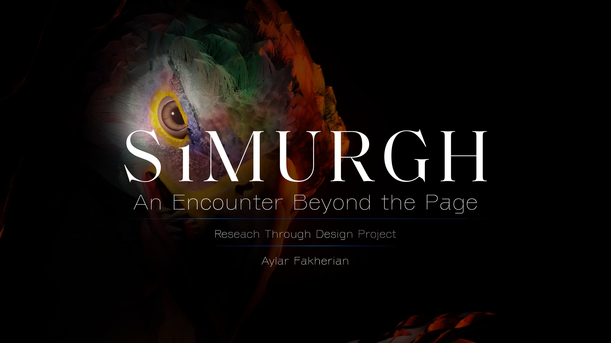

Simurgh — Interactive VR Experience
Research through Design Investigation

Simurgh is an immersive Virtual Reality experience exploring how interactive systems can create meaningful encounters with intangible cultural heritage through embodiment, narrative, and digital experience design.
Research Approach: Research through Design (RtD)
Research Areas: Virtual Reality · XR · Digital Cultural Heritage · Human-Centred Design
About the Project
Rather than simply representing cultural heritage, this project investigates how immersive experiences can support interpretation, engagement, and embodied encounters with cultural narratives.
Researcher
Aylar Fakherian
Human-Centred Designer | Research through Design